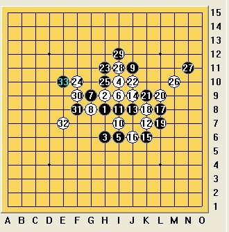
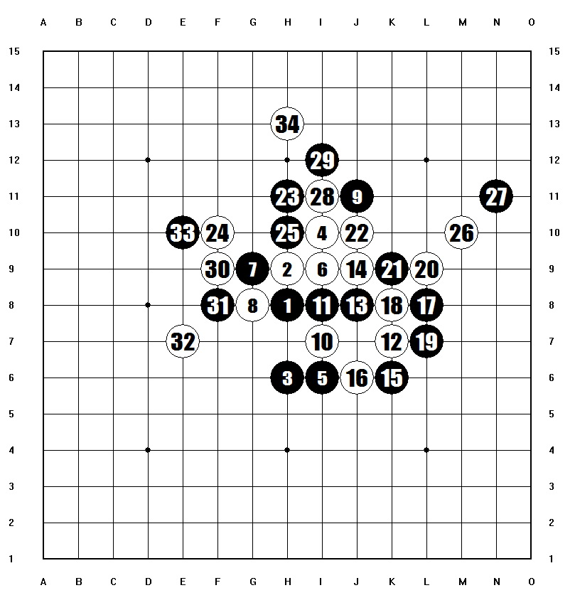
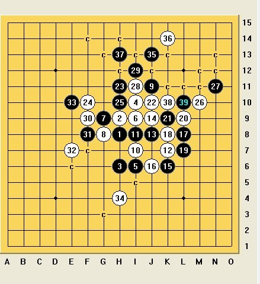
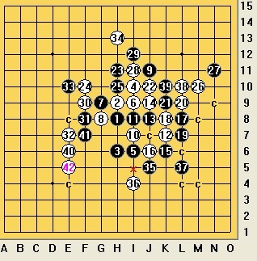

瑞的一个变化
#1 瑞的一个变化作者：茗弈求学 发表时间：2010-9-25 16:45:09

请教各位老师，这个34白在哪比较好？
#2 Re:瑞的一个变化作者：丌同 发表时间：2010-9-25 20:07:15
这里不存在绝对的正确与错误，就通盘来说白的优势在左下，黑的优势在上面，右下，。白现在的目的有两个，1是防守住黑棋，不让黑棋在上面杀出来，或者是联系右边杀出来，二是在黑棋没杀的基础上自己抢先动手。现在局势黑上面存在杀的手段，下面白做VCT取胜难度还是相当大，因此，这里白采取稳当防守比较合理。

如图，个人感觉这个点就非常的不错，是属于直接防守类型的点，以静制动，伺机与黑争下面的地盘，同时隐约有左边和左上联系的味道。如果黑选择防守白的眠四，白就有机会与黑在下面纠缠。由于水平有限，不保证这个点是最好的点。
以上仅表示个人观点，仅抛砖引玉，请大家畅言。
［ 掌棋宣传员 于 2010-9-25 20:45:50 时花20金币送鲜花一朵］
［ 掌棋宣传员 于 2010-9-25 20:45:52 时花20金币送鲜花一朵］
［ 茗弈小刀 于 2010-9-26 10:18:33 时奖励此帖[金币加 100 威望加1］
#3 Re:瑞的一个变化作者：爱五子棋迷 发表时间：2010-9-25 22:27:23
=======上图对应的爱五子棋谱代码如下，以便你拆解：========
h8h9h6i10i6i9g9g8j11i7i8k7j8j9k6j6l8k8l7l9k9j10h11f10h10m10n11i11i12f9f8e7e10h4
======================================================
［ 茗弈小刀 于 2010-9-26 10:24:10 时花20金币送鲜花一朵］
#4 Re:Re:瑞的一个变化作者：丌同 发表时间：2010-9-25 22:44:54
你的这个34的确是攻击的好棋，抢到了下面，但黑上面直接VCT了。
你可以自己拆一下。
#5 Re:瑞的一个变化作者：賢周 发表时间：2010-9-26 6:37:12
=======上图对应的爱五子棋谱代码如下，以便你拆解：========
h8h9h6i10i6i9g9g8j11i7i8k7j8j9k6j6l8k8l7l9k9j10h11f10h10m10n11i11i12f9f8e7e10h13j5i4l5
======================================================
［ 茗弈小刀 于 2010-9-26 10:21:19 时花20金币送鲜花一朵］
#6 Re:瑞的一个变化作者：茗弈小刀 发表时间：2010-9-26 10:21:00
丌同老师回答分析得非常好！谢谢！#7 Re:Re:瑞的一个变化作者：茗弈小刀 发表时间：2010-9-26 10:23:29
5楼朋友这个：
#8 Re:Re:Re:瑞的一个变化作者：米 发表时间：2010-9-26 12:00:12
=======上图对应的爱五子棋谱代码如下，以便你拆解：========
h8h9h6i10i6i9g9g8j11i7i8k7j8j9k6j6l8k8l7l9k9j10h11f10h10m10n11i11i12f9f8e7e10h13j5i4k4
======================================================
这个33之后，如果防下面黑上面胜，防上面黑如图下面胜，因此我觉得白应该利用左边的先手化解黑的胜招，白34走e9和d8我觉得都能防住，如果一定要选择一个，我就走d8。
［ 潇洒 于 2010-9-26 12:02:41 时奖励此帖[金币加 100 威望加1］
［ 茗弈宽容 于 2010-9-26 12:24:06 时花20金币送鲜花一朵］
［ 茗弈宽容 于 2010-9-26 12:24:23 时花20金币送鲜花一朵］
#9 Re:瑞的一个变化作者：茗弈宽容 发表时间：2010-9-26 12:31:03
谢谢小米老师，如果
=======上图对应的爱五子棋谱代码如下，以便你拆解：========
h8h7h10i6i10i7g7g8j5i9i8k9j8j7k10j10l8k8l9l7k7j6h5f6h6m6n5i5i4f7f8e9e6d8f9
======================================================
这个35后边白如何下比较好呢？
#10 Re:Re:瑞的一个变化作者：米 发表时间：2010-9-26 13:19:13
=======上图对应的爱五子棋谱代码如下，以便你拆解：========
h8h9h6i10i6i9g9g8j11i7i8k7j8j9k6j6l8k8l7l9k9j10h11f10h10m10n11i11i12f9f8e7e10d8f7e9c7f6c9c6
======================================================
关于楼上的进一步探讨，我会如图这样走，黑33后形成的上下两套杀都被防住了。
［ 茗弈宽容 于 2010-9-26 15:44:25 时花20金币送鲜花一朵］
［ 茗弈宽容 于 2010-9-26 15:44:47 时花20金币送鲜花一朵］
#11 Re:瑞的一个变化作者：茗弈宽容 发表时间：2010-9-26 15:45:47
谢谢小米老师，借此祝福小米老师全家国庆快乐！